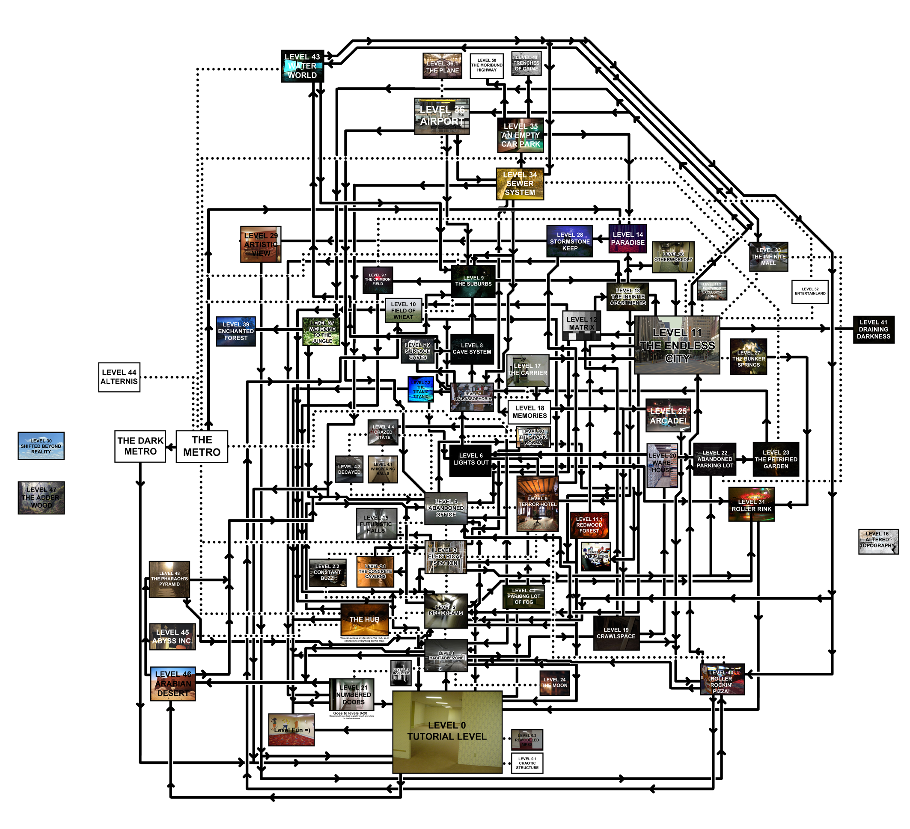

The Backrooms : une fiction critique populaire
Titouan Gracia
Club ASAP 10
avril 2026
Temps de lecture : 10 min
1. The Backrooms
Au début, les backrooms c’est juste une image d’un intérieur composé de pièces et de couloirs jaunâtres, éclairés par des néons bourdonnants et recouverts d’une moquette humide. L’image, postée sur le forum en ligne 4chan, est accompagné d’un texte, lançant le mythe qui va rapidement s’étendre à tout internet.
L’essentiel des backrooms est déjà là : un univers parallèle horrifique dans lequel on peut rentrer à tout moment en noclippant (sortant) accidentellement de la réalité, comme si l’on traversait le décor d’un jeu vidéo.
Rapidement, tout une culture se développe : sur les forums, des niveaux sont découverts, ayant chacun leur imaginaire mais reprenant tous cette esthétique liminale c'est-à-dire des espaces possédant des caractéristiques telles que des grandes pièces vides et répétitives, donnant une sensation de déjà-vu à ceux qui s'y aventureraient.
Ainsi, après la diffusion initiale de cette image (sorte de date de naissance des backrooms) sur 4chan où elle a gagné en popularité, les internautes se sont emparés de la légende pour étendre son univers. De nombreuses créations dérivées, comme des sites d'écriture collaborative, des jeux vidéo et des courts métrages d'horreur ont vu le jour sous l'impulsion de la communauté et ont contribué à populariser le concept auprès du grand public.
Exemples de niveaux :
Level 1 – Habitable Zone : Un dédale industriel jauni et bruyant, relativement sûr, où l’on peut survivre en restant vigilant face aux entités.
Level 9 – The Suburbs : Un quartier résidentiel nocturne et silencieux, aux maisons inquiétantes et aux rues sans fin, peuplé de dangers imprévisibles.
Level 11 – Concrete Jungle : Une immense ville moderne apparemment normale mais étrangement vide, offrant de vastes possibilités d’exploration et de survie.
Level 14 – Inhospitality : Un environnement sombre et oppressant où le décor lui-même semble hostile, rendant toute survie extrêmement difficile.
Level 15 – Futuristic Halls : Des couloirs futuristes immaculés et déroutants, emplis de technologies inconnues et d’une atmosphère froide et artificielle.
Il est important de comprendre qu’ils existent déjà des milliers de niveaux, tous connectés par des passages secrets que certain..es tentent de répertorier (voir carte des 50 premiers niveaux). De nouveaux sont d’ailleurs créés chaque jour.

2. Backrooms, critique architecturale post-air conditionné
Ce que l’on voit avec ces backrooms, c’est une réelle critique de l’architecture post-air conditionné. Telle que décrite par Rem Koolhaas dans Junkspace dans les années 2000
« La continuité est l’essence même du Junkspace ; il exploite toute invention permettant l’expansion, déploie l’infrastructure de la continuité sans rupture : escalator, air conditionné, sprinkler, volet coupe-feu, rideau d’air chaud… Il est toujours intérieur, si vaste que l’on en perçoit rarement les limites ; il favorise la désorientation par tous les moyens (miroir, brillant, écho) … Le Junkspace est hermétique, maintenu non pas par une structure mais par une enveloppe, telle une bulle. La gravité est restée constante, contrée par le même arsenal depuis la nuit des temps ; mais l’air-conditionné — medium invisible, donc inaperçu — a véritablement révolutionné l'architecture. L’air-conditionné a donné naissance au bâtiment sans fin. Si l'architecture sépare les bâtiments, l’air-conditionné les unit. L’air-conditionné a dicté des régimes mutants d'organisation et de coexistence qui laissent l'architecture derrière eux. »
Rem Koolhaas, Junkspace, 2006
Le lien entre backrooms et critique de l’architecture contemporaine et du capitalisme tardif à déjà été fait, je ne m’attarderais pas dessus. Voir à ce sujet la participation de Marie Frediani ou l'article de Andrew Gipe-Lazarou.
Ce qui m’intéresse aujourd’hui, en lien avec le thème de cette édition de ASAP, c’est la qualité de cette critique.
3. Critique populaire
Je vous ai cité tout a l’heure un passage de Junkspace de Rem Koolhas, qui constitue, dans une forme d’exercice de style proche de la poésie, une critique architecturale.
Si les Backrooms nous parlent sensiblement de la même architecture, cette critique se pose et est produite de manière complètement différente.
Les Backrooms sont une version populaire et actualisée du Junkspace de Rem Koolhaas. Mais là où Koolhaas formule une critique théorique de la production architecturale, les Backrooms en proposent une traduction visuelle, sensible et collective.
Elles nous montrent des espaces de transition, sans identité, vidés de leur fonction et de leurs usager.es, comme figés dans un état d’attente permanente.
Les Backrooms déplacent la critique architecturale vers la culture populaire : ce ne sont plus des architectes qui théorisent l’espace contemporain (donc des savant..es), mais des communautés en ligne qui, par images et récits partagés, construisent collectivement un imaginaire commun. Le Junkspace devient alors un mythe collaboratif : une critique de l’architecture par ceux qui la traversent quotidiennement.
Néanmoins, cette critique ne se pense pas ou n’arrive pas à se penser en tant que critique. Dès qu’elle est produite, elle est sans cesse détournée en memes, vidéos ou trend tiktok.
Critique fictionnelle
On peut alors se questionner sur la dérive de cette critique, sur le fait qu’elle n’existe pas en tant que critique, mais comme monde fictionnel.
Bourdieu, dans Ce que parler veut dire (1982), nous explique que la valeur sur le marché des productions symboliques dépend certes de la compétence linguistique de leur émetteur, mais aussi de sa compétence légitime, c’est à-dire de son pouvoir symbolique d’imposition, de son autorité issue de sa position dans l’espace social.
La critique que constitue les Backrooms est donc doublement disqualifié. Premièrement parce qu’elle ne se formule pas comme la critique légitime : elle n’existe qu’en image ou en meme et pas en texte littéraire académique, et deuxièmement car elle est détachée de cell·eux qui l’émettent : l’univers se développe essentiellement en ligne, les émetteurices jouant avec leur statut anonyme (l’univers lui-même étant né d’une contribution anonyme).
Cette critique s’auto-disqualifie en même temps qu’elle s’exprime.
Le fait qu’elle se développe sous la forme d’une fiction n’est pas tant un problème, de nombreuses critiques existent en tant que fiction (parallèle avec les chansons et histoires populaires critiques du pouvoir dans l’histoire (la carmagnole, blanche neige, cendrillon). La différence entre ces histoires populaires et la nôtre réside dans le fait que cette critique est spatialisée et parle des rapports spatiaux.
Concernant le problème des fictions-critique, et de leur disqualification en tant que critique, est que, par définition, la fiction n’est pas réelle, et donc facile à détourner.
Les nations et les hommes ont besoin de mythes et de mensonges pour se construire. Ce qui ne veut pas dire que les livres soient des mensonges même si, par définition, une fiction est toujours un mensonge. C’est un mensonge qui touche à la vérité.
Nombre de ces fictions-critiques sont par ailleurs détourné par des grosses machines type Disney, celles-ci perdent in fine leur potentiel critique réflexif. Le mythe des Backrooms n’en est pas exempt et l’on surveillera d’un œil critique la sortie dans bientôt 1 mois, d’un film réalisé par A24 sur notre fiction-critique.
Paul Auster, La solitude du labyrinthe, 1997.
4. Transformer cette critique architecturale en outil révolutionnaire
Pour en faire un outil révolutionnaire, il faut peut-être la sortir de son cadre fictionnel sans perdre son côté accessible et universelle. La sortir de son cadre fictionnel pour qu’elle se pense et se développe en tant que critique architecturale et surtout critique de société.
Si, pour les architectes prétendus marxistes que nous sommes, le lien entre architecture et système de pouvoir a déjà été fait et devient quasi évident, il faut désormais que cette critique conscientise qu’elle est en fait et avant tout une critique du capitalisme tardif. L’architecture que l’on retrouve dans les backrooms est en effet la matérialisation de celui-ci : circulation fluide, rendement au m², interchangeabilité, contrôle permanent, homogénéisation, …
Les backrooms, critique sensible de la matérialisation de la société, doivent désormais se comprendre en tant que critique du capitalisme tardif.
Là où les usagers ne perçoivent qu’un malaise diffus face à des espaces interchangeables, l’analyse marxiste permet de comprendre que ces formes architecturales ne sont pas accidentelles mais constituent l’organisation spatiale optimale pour la circulation du capital. Relier ce mythe populaire et l’expérience de celui-ci à ses causes matérielles transforme une fiction d’horreur en critique potentiellement révolutionnaire de la production de l’espace.
Cette critique se pense déjà dans le temps, en atteste les nombreux témoignages de personnes ayant discuté avec d’autres, elles même coincées dans les backrooms depuis l’époque préhistorique ou celles-ci étaient en fait un système de cavernes et de grottes, ou d’autres exemples parlant de l’architecture médiévale.
S’il faut tout de même préciser que tout ceci est inventé, que les backrooms sont « nées » en 2019, il est intéressant de remarquer que de nombreuses personnes conscientisent cette critique dans le temps, et pas seulement critique de la société contemporaine. On pourrait alors souhaiter que cette critique perdure et se transforme en outils révolutionnaire, constituant par la même un véritable contre-pouvoir, essence même de la critique, permanent.
L'ensemble des articles issus du club asap 10 sont disponibles ci-dessous:
| # | Titre | Auteur | |
|---|---|---|---|
| 100 | Les styles de la critique | Hugo Forté | Club #10 |
| 101 | L'oeuvre critique | Maxime La Goutte | Club #10 |
| 102 | Démanteler le spectre post-critique | Louis Fiolleau | Club #10 |
| 103 | The backrooms, une fiction critique populaire | Titouan Gracia | Club #10 |
| 104 | What you read is what you get | Hugo Forté | Club #10 |
| 105 | Un problème chez ASAP | Herzgeg & Deux Neurones | Club #10 |
| 106 | Tableau nantais d'une critique | Un gars laxique | Club #10 |